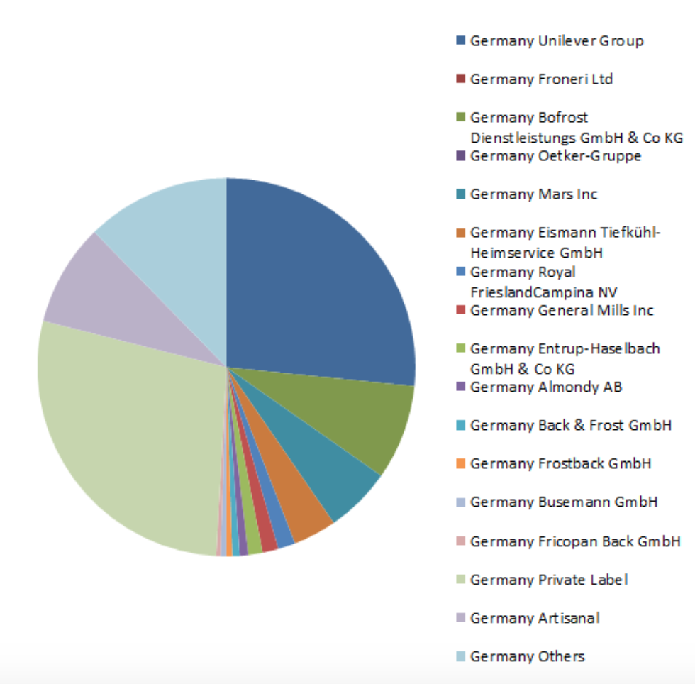
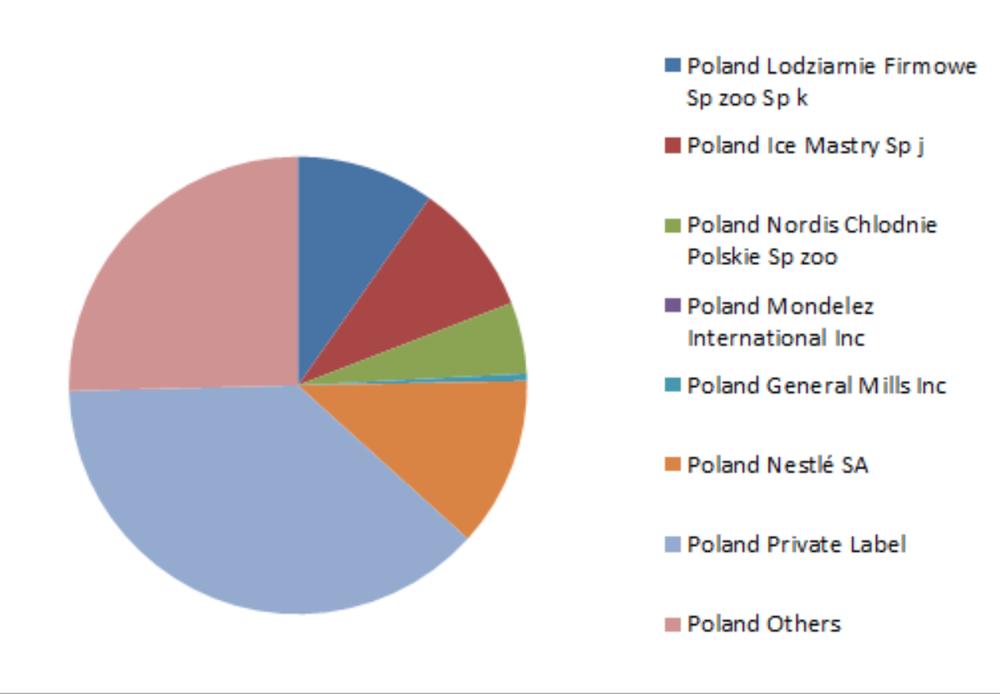
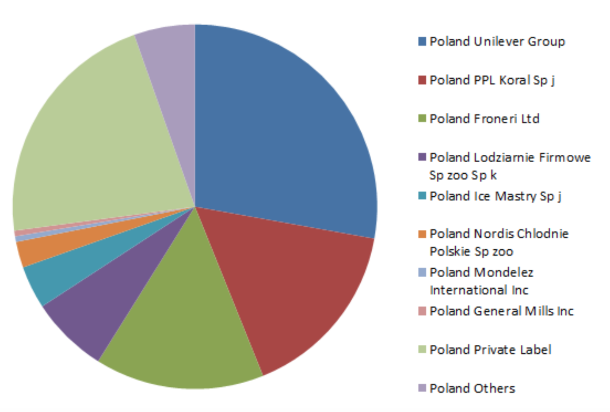
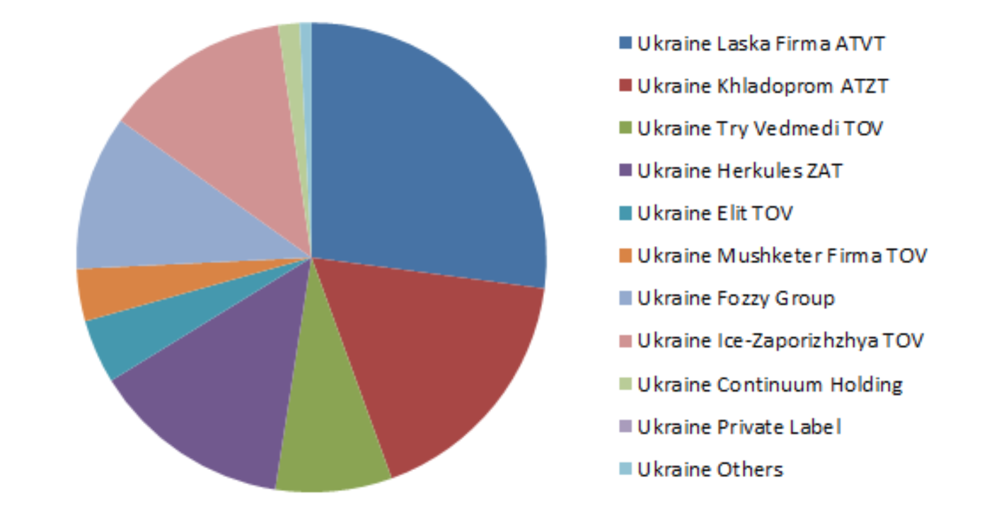
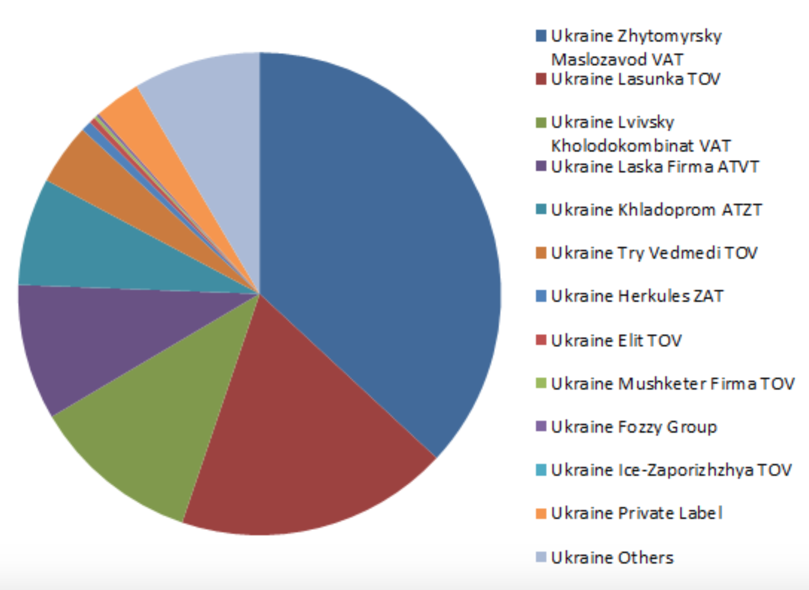

Ice Cream Market Analysis
This is a report made by PNS Solutions with the goal of providing a more efficient view towards the markets of Germany, Poland and Ukraine for new Ice Cream producers and sellers that are looking forward to expanding their business and would like to get details on promising countries. As those 3 have shown great potential, we have made a report to illustrate our data findings. You can go through the whole report or use the navigation bar to get straight to the point you want to check.
Getting started
Here you get general information about these countries. All of them are located in Europe and they are close to each other. Poland and Germany are the members of European Union, what gives them opportunity to trade freely between themselves. The fact of having common border and market makes trade in this area more simple. Costs of transportation might be reduce if countries are used as transit states. For sure, non-obstacles creates lots of opportunities for reducing costs and misspending money. In that situation, that is easy to create supply chain or warehouse network. In case of Ukraine, it is a little bit different and difficult. Ukraine is not a member of European Union, though both of them have signed the Association Agreement and the Deep and Comprehensive Free Trade Area (DCFTA). Ukraine is a priority partner within the Eastern Partnership and the European Neighbourhood Police (ENP). The Eu is seeking an increasingly close relationship with Ukraine, going beyond co-operation, to gradual economic integration and deepening of political co-operation. It gives you an access to new developing market, in which you can rapidly place your niche.
About Us
We are a small and young research company. Our company is a group of high qualified stuff from Cracow University of Economics. We made successfully lot of researches and discoveries. Our company is trusted and respected in Poland, you can be sure that our exploring will be helpful and important for your decision – can you enter new market or not? The enterprise has been providing excellent service since 2017. Our Headquarters is located in Cracow, Poland. Our branch offices are widely spread throughout Poland and even some in Ukraine, Germany and Brazil. Nowadays we have explored European markets of good, especially consumption of food. We have a huge base of statistical data collected for years. We update the bases and pick new ones all time. If we have not any useful information for you, we can particularly make research of any market and any category, by using our experience and expertise. At P.N.S. marketing solutions we believe in the idiom “Forewarned is forearmed”.
Company Strategy:
-
Purpose: To be a leader in the marketing research industry by using the tools provided by modern technology beyond success.
-
Vision: To provide quality services that exceeds the expectations of our esteemed customers.
-
Mission statement: To build long term relationships with our customers and clients and provide exceptional customer services by pursuing business through innovation and advanced technology.
-
Core values: We believe in treating our customers employees and partners with respect and faith. We grow through creativity, invention and innovation. We integrate honesty, integrity and business ethics into all aspects of our business functioning.
-
Goals: Our goals are nothing less than revolutionizing the way marketing research is being made and we want to become the best at what we are doing.
Our Services:
As we pointed out, we could make any research into any market of any consumption goods. We have huge base of statistical data and great experience of exploring. Indeed, our customers rapidly get a feedback and shortly receive a report. We may analyze a lot of categories, which are demographical and age categories, preferential tastes, cultural and traditional differences. It is a short list of our capability, it is much wider. We take additionally opinions and preferences of people from various sources, for instance from foreign allies with similar type of activity for deeper examination.
The Product
The product we choose is called ice cream, which is a sweetened frozen food, typically eaten as a snack or dessert. It is unusually often in store made from milk and cream, and usually combined with fruits or other ingredients and flavors. It is normally sweetened with sugar. Typically, colors and flavours are added in order to appear more natural, healthy and tasty. The mixture is stirred to incorporate air spaces and cooled below the freezing point of water to prevent detectable ice crystals from forming. The result is a smooth, semi-solid foam that is served at very low temperatures below 2 °C .
The meaning of the name "ice cream" varies in the countries Germany, Poland and Ukraine, which we look at. In Germany it is simply called “Eis”, which can be translated to ice, without further descriptive add ons. In Ukraine people named the good “Морозиво”, which sounds like “ Morozyvo”. In Poland terms such as "frozen custard," "frozen yogurt," "sorbet," "gelato," and others are used to distinguish different varieties and styles in different countries and cultures. In the observed countries, governments regulate the commercial use of the various terms according to the relative quantities of the main ingredients, notably the amount of cream. Products that do not meet the criteria to be called ice cream are labelled “Tiefgefrohrenes Dessert” "frozen dessert", in Germany instead. In another country, such as Ukraine, one word has only one meaning, which is “frozen one” and has single meaning. Well, customer will not be confused what is inside of package. For those who are lactose intolerant, allergic to dairy protein, or vegan there are ice creams made from dairy alternatives, such as goat's or sheep's milk, or milk substitutes in all of the three countries we researched. Ice cream can be served in dishes, for eating with a spoon, or licked from cones. Ice cream is often combined with other desserts, such as cake, pie, or as an ingredient in ice cream floats, sundaes, milkshakes, ice cream cakes and even baked dishes.
Germany
About the country
Germany is a developed state in western part of Europe, Official name of country is Federal Republic of Germany. It lies between the Baltic and North Seas to the north, and the Alps to the south. It borders Denmark to the north, Poland and the Czech Republic to the east, Austria and Switzerland to the south, France to the southwest, and Luxembourg, Belgium and the Netherlands to the west. Germany includes 16 constituent states, covers an area of 357,386 square kilometres (137,988 sq mi), and has a largely temperate seasonal climate. With 83 million inhabitants, it is the second most populous state of Europe after Russia, the most populous state lying entirely in Europe, as well as the most populous member state of the European Union. Germany is a very decentralized country. Its capital and largest metropolis is Berlin, while Frankfurt serves as its financial capital and has the country's busiest airport. Germany's largest urban area is the Ruhr, with its main centres of Dortmund and Essen. The country's other major cities are Hamburg, Munich, Cologne, Stuttgart, Düsseldorf, Leipzig, Dresden, Bremen, Hannover, and Nuremberg.
Graphs and Data
Presence of the biggest Ice Cream companies in Germany (%)
Germany 2013
https://go.euromonitor.com/passport.html
Germany 2018

https://go.euromonitor.com/passport.html
Germany has had a free and globalized market for decades and in the group of countries that we compare, the longest time. This is also visible in the exports, Germany is Europe's number one ice cream exporter and also in the company shares in the german market. There has been little to no movement between 2013 and 2018. The few changes are due to company takeovers and no entries. This would make germany the least interesting country to enter, but what we have to consider is the huge size of the market and the room for niches. Germany is the biggest and one of the richest markets in europe and due to that stays interesting for a market entry, even though the company shares of the biggest players have almost not changed at all in the past decade.

https://go.euromonitor.com/passport.html
In Germany, there is a bigger diversity of packaging types than Poland and Ukraine.This is due to the longer existence of a free market and biggest competition. Because of a bigger amount of companies and brand diversity, it is also harder to stand out by making a different packaging. There is a great tendency for paper based containers and they become more appealing for customers because paper is more natural and people prefer it over plastic for saving the environment. We recommend using paper containers in a market entry because of this fact.
Poland
About the country
Poland is a country located in Central Europe. It is divided into 16 administrative subdivisions, covering an area of 312,696 square kilometres (120,733 sq mi), and has a largely temperate seasonal climate. With a population of approximately 38.5 million people, Poland is the sixth most populous member state of the European Union. Poland's capital and largest metropolis is Warsaw. Other major cities include Kraków, Łódź, Wrocław, Poznań, Gdańsk, and Szczecin. Poland is bordered by the Baltic Sea, Russia's Kaliningrad Oblast and Lithuania to the north, Belarus and Ukraine to the east, Slovakia and Czech Republic, to the south, and Germany to the west.
Graphs and Data
Presence of the biggest Ice Cream companies in Poland (%)
Poland 2013
https://go.euromonitor.com/passport.html
Poland 2018
https://go.euromonitor.com/passport.html
In Poland the market of ice cream is very interesting because of both potential and growth. We can see a relatively big change in the company shares from 2013 to 2018. In 2013 the market was mainly controlled by small and private labeled companies, which had little international interference whatsoever. But due to a common european market and globalisation, their shares have fallen quickly. With the market entry of unilever group, partly by expansion of already owned companies and party by purchase of polish companies this very international and global company was able to become Poland's number one ice cream producer and seller. For the potential market entry in Poland these are very good signs. We are dealing with a fast growing -high potential market with room for expansions. This makes Poland our mostly recommended ice cream market to enter in.
https://go.euromonitor.com/passport.html
The polish situation is similar to the Ukrainian. A large part of the market belongs to flexible packaging, but the difference is not as big. This can be explained by their shared communist past. We recommend a different packaging for a market entry in order to stick out and provide a unique customer experience. The market is stable and it is not expected to change in big numbers.
Ukraine
About the country
Ukraine, sometimes called the Ukraine, is a country in Eastern Europe. Excluding Crimea, Ukraine has a population of about 42.5 million, making it the 32nd most populous country in the world. Its capital and largest city is Kiev. Ukrainian is the official language and its alphabet is Cyrillic. Ukraine is currently in a territorial dispute with Russia over the Crimean Peninsula, which Russia annexed in 2014. Including Crimea, Ukraine has an area of 603,628 km2(233,062 sq mi), making it the largest country entirely within Europe and the 46th largest country in the world. As was mentioned, there is The Ukraine–European Union Association Agreement, which commits to co-operate and converge economic policy, legislation, and regulation across a broad range of areas, including equal rights for workers, steps towards visa-free movement of people, the exchange of information and staff in the area of justice, the modernisation of Ukraine's energy infrastructure, and access to the European Investment Bank.
Graphs and Data
Presence of the biggest Ice Cream companies in Ukraine (%)
Ukraine 2013
https://go.euromonitor.com/passport.html
Ukraine 2018
https://go.euromonitor.com/passport.html
Looking at the ukrainian market shares and their development, it becomes obvious that this country is not part of a european customs union and far away from a free market. All main players are not only ukrainian, but also owned by the so called “oligarchs” wich are a remain of the failed entry of a free market in Ukraine after the fall of the soviet union. Even worse is the development. In opposition to everything we have been hearing from ukrainian government officials in the past decade, this country is far away from real competition. Almost all major ice cream sellers that were in place 2013 are there in 2018 as well. For the potential entry of this market these are very bad news. It is expected to be almost impossible to enter due to corruption and government intervention in the market.
https://go.euromonitor.com/passport.html
Ukrainian producers prefer flexible packaging because of the flexibility it offers and it low price. And there is a tendency for paper based containers, it more than doubled and has a good but slow tendency. The market is not going to change totally and there is an opportunity to surprise customer with new and unique packaging types.
Comparative Analysis
Expenditures in Euros per household on ice cream
As we see from graph, Germany has the highest expenditure per household on ice cream, also Germany and Poland has stable growth of it. Although, situation into Ukraine is not so good as in others. Market is unstable,we can see from table some fluctuation from 2012 till 2016. When looking at the expenditure exclusively we get the impression, that Germany is the most attractive country for a market entry, since people are willing to spend nearly three times more on ice cream than the other countries observed. We got a question why did Ukraine get these fluctuation in ice-cream market.What we found out is there was war between Ukraine and Russia, some of factories were localized in/by war area and they must have shut down the businesses because of threat or just occupation. As we are going to show later, in Ukraine was high inflation in the period, and it also has an influence.
https://go.euromonitor.com/passport.html
Yearly tendency of change in market size
Our team decided to take into consideration only tendency of market changing, except for the market size. It is obvious that higher economic development of country has a bigger market size. Researched the markets we found out that nowadays considered countries have rising of their domestic markets. But not always it was like that. For instance, in Ukraine was declining of ice-cream market from 2013 till 2015 which equals 39%. It is explained by territorial conflict which led to shutting down of some factories. Now situation in Ukraine is not so good and there appears some reducing of growth, nevertheless it is a growth. Due to Passport there should be higher growth which will equal 7% what is awesome for Ukraine. In Germany we have as always stable growth which equals 1-2% what is good. It shows that market is stable and established. There will not appear unpredicted changes or “huge” competitors because they are already there and take the niche. Amazing tendency we observe in Poland. It has had rapid growth since 2016. Among overseen states higher growth was only in Ukraine in 2013 which equaled 36%. Polish market it is a marked which develops constantly. According to Passport database, Poland will stay wider in following years. Within two following years growth will be 14% what is an awesome number for developed state.
https://go.euromonitor.com/passport.html
Inflation rate
The topic of Inflation rate. We are sure that Inflation rate is the one of the most important thing when you are making market research. It shows threats and possible bonuses of market. From found information, we would like to point out that in the markets were totally different situations. In Germany has been typical for developed state situation. It has had slow growing inflation which not suppose to bring some disasters or unpleasant situation Situation in Poland has been a little bit different. It had even deflation in 2015,2016, but now the monetary market has been showing stable inflation from 2017 and there is prediction to be so. The most complex situation in Ukraine. It has a high inflation after 2013, but has good tendency of inflation reducing. In 2018 the rate of whole price changing was 11% what is harmful for Ukrainian economy, but useful for foreign investors. Even though, before crisis, in 2013 was deflation on level of 0,3%. High inflation makes Ukrainian market more attractive for FDI (Foreign Direct Investment).
https://go.euromonitor.com/passport.html
Ice-cream production by Germany and Poland
(lack of data for Ukraine) Below you could see a table of statistic data of ice-cream production in millions of liter for Germany (blue line) and Poland (orange line). Unfortunately, we did not find such information for Ukraine. It is not a secret that Germany is the second biggest producer of the good among European Union members and concurrently the biggest exporter in the world. Although it has had unsatisfied tendency since 2014 but now Deutschland has slow aresing and in accordance with Bizvibe it will have had growth in scale of 11% by 2021. In case of Poland, everything looks different. Poland had got fast and high growth of production by 2016. In 2017 it began to decline and return to usual market condition which had been before 2015. It means good opportunity to take easily a place on market and stay on there.
https://ec.europa.eu/eurostat/
https://go.euromonitor.com/passport.html
Avoiding of consumption of dairy products
Our team checked out how many people avoided consumption of dairy goods in Europe. Unfortunately, we were able to collect data only for 3 years, but we got it for different generation groups. We would like to point out that middle generation group which is in age from 45-59 years old had bad tendency (we highlighted it on graph through crossing line) for sellers. There is a unsatisfied tendency for sellers at all. During these 3 years, number of people who decided to give up consuming of dairy products ( which are partly ice-cream) increased 1.3%, from 10,7% in 2015 to 12% in 2017. Of course, it is not describing exact situation in pointed countries, but it helps to figure out what happens on whole european market. You may ask us why we did such type of research. Because it may helps to aim upon specific group of people for making marketing things or to flee a group which are not interested in the item.
https://go.euromonitor.com/passport.html
Tariff Rate in each state
https://go.euromonitor.com/passport.html
Tariff rate is so important in our case, because we consider large states and imposed tariffs at most cases change only gains of foreign exporters. Market structure and prices are relatively stable and fluctuate a bit. As was mentioned many times, Germany and Poland are members of European Union, in accordance with that fact, it is obvious they have common foreign policy and as consequence common tariff on importing items. The countries have good tendency of reducing a tariff rate, if we are looking from exporter side. In 2019 tariff rate of these states equals 5%, which is higher than in third compared country. Situation in Ukraine is totally different. It has had stable situation and tariff rate equals 4.5%. We checked out the market from 2012 till 2019 year and it has not changed and even more, it is not going to change in the nearest future.
Final considerations
After spending hours, days and months investigating the insights of three very interesting and simultaneously complicated economies we can finally conclude our both surprising and at the same time very reasonable results. We learned that Germany, Poland and Ukraine are as full of history and opportunity as they are different to each other. With Germany being a long established and well accessible market that has the biggest group of customers not only in our comparison, but also in the whole of Europe, it offers a lot of possibilities. Throughout the carefully observed time frame, the inflation rate in Germany has been steadily well. Additionally the citizen of this breathtaking country earn well and consume a lot. This plays into everyone's hand that enters the german market and also counts positively for a potential entry into the ice cream market. Unfortunately this is also where germany's greatest weakness lays. In this economy we can find a lot and while comparing these three countries -the most competition. The two biggest players in the frozen desert market, Unilever and Nestle both aggressively attack this market by expanding current and buying additional company shares. Also Germany is the greatest producer of ice cream in europe and its citizens are happy to consume domestically to a low expenditure. This drives down the price and increases competition, which is not optimal for a possible market entry. The only logic option is the entry into a niche, but since this is not the main target Germany fortunately disqualifies for our number one country. This brings us to the next country compared: Ukraine. After concluding about the best developed economy, we now look at its equal counterpart, the worst developed one. In Ukraine unemployment is high, corruption great and a war in place which threatens to overthrow the entire socioeconomic system. But of course this is only half of the truth. The people's republic of Ukraine has good tendency of economic development what makes its market more attractive. Citizens become to earn more, as a result they could spend more. Ukraine has lower tariff rate than other compared states and it makes easier to penetrate the market because it will not change a price on ice-cream a lot. Possibly Ukraine might become a member of European Union what may help to do business there. The market and country as whole had been unstable for years, but, fortunately, it becomes better and better. Nowadays it grows stably and without any unpredicted situations .Due to such unfavorable case which occurred in the state, lots of producers went away or were shut down. It helped new companies entered the market but also existed firms to stay bigger. Such three companies as Zhytomyrsky Maslozavod, Lasunka and Lvivsky Kholodokombinat became the owners of almost 70% of market shares. Ukraine has an access to sea and it makes trade simpler and cheaper, on account of low costs of ship delivery.Geographical location is important if you want to operate in the market and even further to open a factory there. Ukraine is localized almost in middle of Europe and it makes a distribution of the good easier and cheaper in any directions. After comparing Germany and Ukraine and concluding that both of these interesting and different countries both do not account for our number one choice, our favorite is now obvious. It's the perfect mixture of established authorities, a reliable legal system and also great growth and a lot of opportunity: Poland. Poland offers everything for a market entry that Germany and Ukraine lack off. Nestle and Unilever have not been around for too long and still a lot of the market shares are owned by relatively small companies that are not operating internationally, making it easier for a new entering company to compete with. Also Poland is, among the investigated economies the fastest growing one. The polish currency, the zloty has had a relatively reliable development in the past and a dangerously high inflation rate, like in Ukraine for example is not a problem. Polish people, since their entry to the European Union have learned and learned to enjoy consumption and are open minded about new products, due to their good experience with foreign brands in the past. Also Poland is a very young country, polish people on average have much more children than germans, which increases attraction, because young people make up the biggest customer group of frozen dessert products. Unlike in Germany, poles are not too fixed on their own brands and are also not big exporters of ice cream, so there is not too high of a competition to be expected with local producers. Of course, also in poland there is not honey running through rivers and other foreign competitors have seen the great opportunity of this market already. The big players in the branch are heavily growing and reaching to this market, but this doesn't mean that there is not room for further companies to expand to Poland. All in all, we conclude that all three countries offer unique opportunities in their own way. Germany because of its purchasing power, Ukraine due to its underdevelopment and a lack of foreign competitors. But considering every single aspect of our detailed research we conclude that Poland, because of its perfect mixture of the greatest opportunities of all observed countries is our number one recommendation to enter. Of course this heavily depends on your personal preferences as a company but from our side Poland gives the best and offers the most.
We certainly hope that this analysis has helped you to get a better and clear knowledge regarding the Ice Cream business markets of Germany, Poland and Ukraine.
Please bear in mind that this data and interpretation can be used for the following purposes:
- Academic purposes
- New business' plans
- Business growth and analysis
This data cannot be sold or distributed independently. Please use it wisely within the requirements.